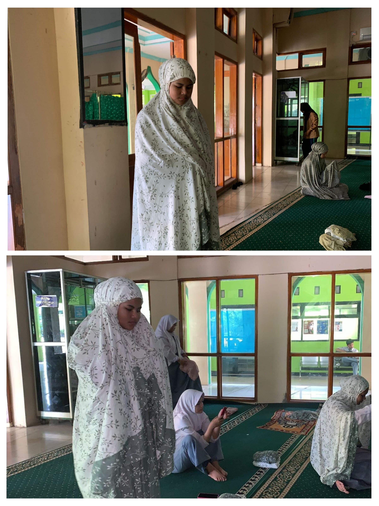

Profile Diri
siti maulida hasanah
Hallo perkenalkan siti maulida hasanah siswi SMAN 1 Rengasdengklok, saya lahir di Karawang(03 april 2007). Hobby saya menyanyi, traveling, kuliner
Pendidikan Formal
- SDN Rengasdengklok Selatan 2
- SMPN 1 Rengasdengklok
- SMAN 1 Rengasdengklok
Pendidikan Non Formal
- Untuk saat ini pendidikan non formal yang saya jalani adalah Menekuni kegiatan Kepramuka
Organisasi
- Pramuka dari tahun 2013 sampai dengan sekarang ini 2024
- Tingkat terakhir pramuka saya adalah penegak laksana
- menjadi anggota osis
Pencapaian SKU/TKU
Pencapaian SKK/TKK

Dokumentasi pencapaian bidang-bidang TKK

Bidang agama, mental, moral, spiritual, pembentuk
TKK SHOLAT
Memahami syarat-syarat rukun dan yang membatalkan sholat

TKK BERKEMAH
Untuk mencapai TKK Qori saya faham akan tajwid dan makhroj dalam membaca alquran dan juga saya telah menanamatkan atau mengkhatamkan alquran.
Bidang ketangkasan dan kesehatan
Dapat menguasai gaya punggung, gaya katak gaya bebas, dan terjun dengan baik dari tepi kolam renang.
Bidang sosial, perikemansiaan, gotong-royong, ketertiban masyarakat, perdamaian dunia dan lingkngan hidup
Untuk mencapai tkk Pengamanan lalu lintas ini saya dapat menjelaskan tata tertib lalu lintas dan juga dapat mengatur arus mudik dengan baik.

Untuk mencapai tkk penunjuk jalan saya dapat menjelaskan atau menunjukan jalan kepada orang lain.


Keikutsertaan Kegiatan
Kegiatan PAM Lebaran/Karya Bakti Pramuka
Saya mengikuti Kegiatan PAM Lebaran/Karya Bakti Pramuka dijalan lingkar tanjung pura pada tanggal 07 april 2024.


saya mengikuti kegiatan PAM Lebaran dijalan lingkar tanjung pura pada tanggal 07 april 2024.
Kegiatan Gema Ramadhan
Kegiatan Gema Ramadhan Zona 4 ini di laksanakan di rawamerta, kegiatan ini dilaksanakan pada saat bulan ramadhan 2024, kegiatan ini juga diadakan untuk bersilaturahmi dan berbagi takjil untuk berbuka puasa untuk warga

dokumentasi ini diambil ketika selesai acara pembukaan

dokumentasi ini dibil ketika sedang mendengarkan ceramah sambil menunggu azan magrib

dokumentasi ini diambil ketika acara sudah selesai dan dilanjut sessi berfoto
Legalitas
Telah Menyelesaikan tingkatan TKK pada 5 bidang kecakapan, mulai dari tingkat Purwa, Madya dan ada beberapa di tingkat Utama

Project Produktif
Dalam Projek Produktif ini saya membuat Tanaman Kangkung dengan Media Tanaman Hidroponik
Langkah-Langkah dalam Pembuatannya yaitu sebagai berikut.

Berikut Link Youtube Poject Produktif Pembuatan Tanaman Hidroponik
Project Produktif
Penguasaan bahasa asing
Dalam Percakapan ini saya membahas PTN Bersama Saudara Saya.

Berikut Link Youtube penguasaan Bahasa Asing
video penguasaan bahasa asing